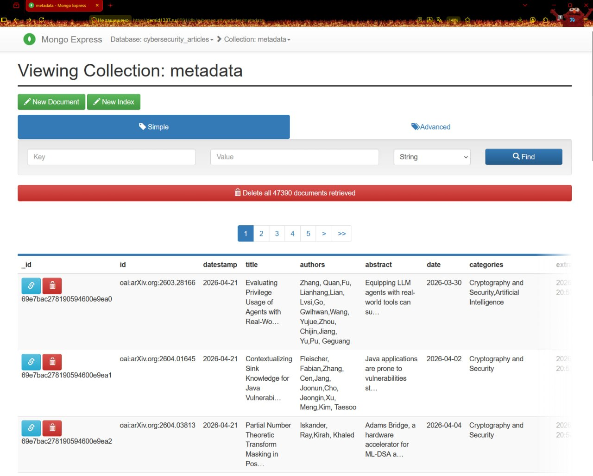

Демонстрация модуля ETL
2026-04-25
На данной стадии мы получим необходимые данные с сайта arxiv.org.
Для парсинга мы воспользуемся следующими библиотеками:
На данной стадии мы получим необходимые данные с сайта arxiv.org.
Для парсинга мы воспользуемся следующими библиотеками:
На данной стадии мы получим необходимые данные с сайта arxiv.org.
Для парсинга мы воспользуемся следующими библиотеками:
На данной стадии мы получим необходимые данные с сайта arxiv.org.
Для парсинга мы воспользуемся следующими библиотеками:
На данной стадии мы получим необходимые данные с сайта arxiv.org.
Для парсинга мы воспользуемся следующими библиотеками:
Основные Функции
Функция parse_oai_records парсит полученные записи.
Она принимает XML, полученный от arxiv,
и для каждой записи вытаскивает
необходимую информацию:
parse_oai_records <- function(xml_content) {
ns <- c(oai = "http://www.openarchives.org/OAI/2.0/",
dc = "http://purl.org/dc/elements/1.1/")
records <- xml_find_all(xml_content, ".//oai:record", ns)
lapply(records, function(rec) {
get_field <- function(xpath) {
node <- xml_find_first(rec, xpath, ns)
if (is.na(node)) NA_character_ else xml_text(node)
}
get_all <- function(xpath) {
nodes <- xml_find_all(rec, xpath, ns)
if (length(nodes) == 0) NA_character_
else paste(xml_text(nodes), collapse = " | ")
}
list(
id = get_field(".//oai:identifier"),
datestamp = get_field(".//oai:datestamp"),
title = get_field(".//dc:title"),
authors = get_all(".//dc:creator"),
abstract = get_field(".//dc:description"),
date = get_field(".//dc:date"),
categories = get_all(".//dc:subject")
)
})
}Функция harvest_arxiv_category осуществляет
запросы к API arxiv. Если есть файл с метаданными,
то берем максимальную дату, указанную там,
и используем её как “точку отсчета”, составляя
запросы с неё. В противном случае составляем
запросы “с нуля”.
harvest_arxiv_category <- function(category = "cs.CR", output_file =
"arxiv_cs_cr.rds") {
base_url <- "https://export.arxiv.org/oai2"
resumption_token <- NULL
all_records <- list()
batch_num <- 0
repeat {
batch_num <- batch_num + 1
cat(sprintf("Fetching batch %d | Total records so far: %d\n",
batch_num, length(all_records)))
if (is.null(resumption_token)) {
response <- GET(base_url, query = list(
verb = "ListRecords",
metadataPrefix = "oai_dc",
set = category))
print(response)
} else {
response <- GET(base_url, query = list(
verb = "ListRecords",
resumptionToken = resumption_token
))
print(response)
}
if (status_code(response) == 503) {
retry_after <- as.integer(headers(response)$`retry-after`)
retry_after <- if (is.na(retry_after)) 30 else retry_after
cat(sprintf("503 received. Waiting %d seconds...\n",
retry_after))
Sys.sleep(retry_after + 5)
next
}
print(response)Затем начинаем сбор данных. Сервер будет отдавать
данные “пачками” по ~1000 записей в формате XML
за запрос. Для пагинации по записям используется
resumption token, который мы получаем от сервера.
В коде предусмотрена обработка ошибок, rate
limiting, дедупликация.
Каждые 2 “пачки” идёт запись в JSON-файл.
harvest_arxiv_category <- function(category = "cs.CR", output_file =
"arxiv_cs_cr.rds") {
base_url <- "https://export.arxiv.org/oai2"
resumption_token <- NULL
all_records <- list()
batch_num <- 0
repeat {
batch_num <- batch_num + 1
cat(sprintf("Fetching batch %d | Total records so far: %d\n",
batch_num, length(all_records)))
if (is.null(resumption_token)) {
response <- GET(base_url, query = list(
verb = "ListRecords",
metadataPrefix = "oai_dc",
set = category))
print(response)
} else {
response <- GET(base_url, query = list(
verb = "ListRecords",
resumptionToken = resumption_token
))
print(response)
}
if (status_code(response) == 503) {
retry_after <- as.integer(headers(response)$`retry-after`)
retry_after <- if (is.na(retry_after)) 30 else retry_after
cat(sprintf("503 received. Waiting %d seconds...\n",
retry_after))
Sys.sleep(retry_after + 5)
next
}
print(response)Иные защитные меры для
предотвращения ошибок
и запись в файл:
if (status_code(response) == 503) {
retry_after <- as.integer(headers(response)$`retry-after`)
retry_after <- if (is.na(retry_after)) 30 else retry_after
cat(sprintf("503 received. Waiting %d seconds...\n", retry_after))
Sys.sleep(retry_after + 5)
next
}
print(response)
if (status_code(response) != 200) {
cat(sprintf("Unexpected status %d. Stopping.\n", status_code(response)))
break
}
xml_content <- read_xml(content(response, as = "text", encoding = "UTF-8"))
records <- parse_oai_records(xml_content)
all_records <- c(all_records, records)
token_node <- xml_find_first(xml_content,
".//*[local-name()='resumptionToken']")
resumption_token <- if (!is.na(token_node)) xml_text(token_node) else NULL
if (batch_num %% 2 == 0) {
saveRDS(all_records, output_file)
cat(sprintf("Checkpoint saved: %d records\n", length(all_records)))
write_json(df, file.path(dirname(output_file), "metadata.json"), pretty = TRUE)
}
if (is.null(resumption_token) || nchar(trimws(resumption_token)) == 0) {
cat("No resumption token. Harvest complete.\n")
break
}
df <- bind_rows(all_records)
Sys.sleep(20)
}После того как получили все метаданные о статьях в формате json, нам надо их
отформатировать и загрузить в mongodb.
Сначала инициализируем соединение и создание нужной нам бд с коллекцией
функцией mongodb_connection. Для этого понадобятся:
После того как получили все метаданные о статьях в формате json, нам надо их
отформатировать и загрузить в mongodb.
Сначала инициализируем соединение и создание нужной нам бд с коллекцией
функцией mongodb_connection. Для этого понадобятся:
После того как получили все метаданные о статьях в формате json, нам надо их
отформатировать и загрузить в mongodb.
Сначала инициализируем соединение и создание нужной нам бд с коллекцией
функцией mongodb_connection. Для этого понадобятся:
После того как получили все метаданные о статьях в формате json, нам надо их
отформатировать и загрузить в mongodb.
Сначала инициализируем соединение и создание нужной нам бд с коллекцией
функцией mongodb_connection. Для этого понадобятся:
Функции для работы с Mongo
Функция mongodb_connection сначала проверяет,
что данные не пустые, потом подставляет
значения в строку, содержащую формат для
подключения к серверу с монго.
library(mongolite)
library(jsonlite)
library(dplyr)
library(purrr)
host <- Sys.getenv("MONGO_HOST")
user <- Sys.getenv("MONGO_USER")
pass <- Sys.getenv("MONGO_PASS")
mongodb_connection <- function(host, user, pass) {
if (host == "" || user == "" || pass == "") {
stop("Ошибка: Переменные окружения не найдены.
Проверьте файл .Renviron и перезапустите R.")
}
url <- sprintf("mongodb://%s:%s@%s:27017/
cybersecurity?authSource=admin",
user, pass, host)
mongolite::mongo(collection = "metadata",
db = "cybersecurity_articles", url = url)
}После использования этой функции у нас остается
сохраненное подключение , которое мы будем
использовать для манипуляций. Теперь мы можем
загружать наш файл. Для этого используем
функцию mongodb_load_json. Для того чтобы
подготовить наши данные, надо будет их
перегнать из json в список, параллельно
обрабатывая поля, которые надо переделать.
Даты переделываем в формат, подходящий mongo.
mongodb_load_json <- function(file_path, collection_obj) {
raw_data <- jsonlite::fromJSON(file_path, simplifyVector
= FALSE)
processed_list <- map(raw_data, function(item) {
# там где перечисление через | меняем на список
if (!is.null(item$authors)) {
item$authors <- trimws(unlist(strsplit(
item$authors, "\\|")))
}
if (!is.null(item$categories)) {
item$categories <- trimws(unlist(strsplit(
item$categories, "\\|")))
}
# форматирование дат
item$date <- as.POSIXct(item$date,
format="%Y-%m-%d", tz="UTC")
item$datestamp <- as.POSIXct(item$datestamp,
format="%Y-%m-%d", tz="UTC")
item$extracted_at <- Sys.time()
return(item)
})
json_strings <- sapply(processed_list,
function(x) {
jsonlite::toJSON(x, auto_unbox = TRUE)
})
message("Файл обработан. \n")
collection_obj$insert(json_strings)
message(sprintf("Успешно загружено %d
записей в MongoDB", length(json_strings)))
}Вот пример использования, в котором мы
сначала создаем подключение, а потом,
используя его, загружаем данные.
Результат работы:

Таким образом, используя инструменты языка R, мы извлекли необходимые нам данные
с arxiv.org, и затем поместили их в нашу базу данных.
ㅤ
На следующем этапе мы проведём обогащение и обработку наших данных,
используя ML инструменты.
GitHub: https://github.com/Llooleg/AI-IOC-Extractor
Telegram: https://t.me/+KLvdo-ZnRCpmNDc6
Готовы ответить на ваши вопросы.